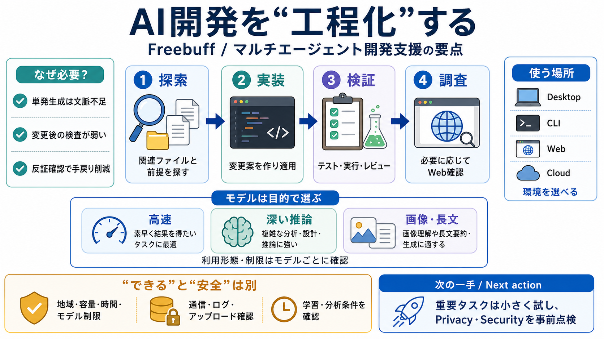

GitHub - CodebuffAI/freebuff: The free coding agent · GitHub
## Free access Freebuff is available in every country. Supported regions receive full access; other regions and VPN use…

ファイル探索と前提理解が必要（探索エージェント）
実装後にレビュー／テスト／実行確認が要る（検証エージェント）
関連ファイルを見つける（探索）
変更と実装（実装）
レビュー・実行・検証（検証）
手元で作業を回しやすい（サンドボックス隔離の言及）
リポジトリやWeb連携を含めた運用に向く
例：DeepSeek Flash（速さ・ツール向き）
例：DeepSeek Pro（推論重視）
モデルごとに独立した日次キャップ（の考え方）
通常セッション枠を共有（ただし例外モデルあり）
地域／容量／時間帯／モデル別の利用形態で挙動が変動
学習可能性や広告パーソナライズのための分析に言及
地域・提供形態・容量・モデル形態・デイリー枠など
“必ず”とは限らず、該当条件がある前提
断定できないため挙動検証と運用工夫が必要
重要タスクは段階的実行・小さく試す（小さな検証）
Privacy Policy／Security／通信・ログを事前に点検（条件把握）
## Free access Freebuff is available in every country. Supported regions receive full access; other regions and VPN use…
Unlike tools locked to a single provider, FreeBuff lets you pick from several models depending on what’s available in yo…
Full-model Freebuff is available in 25+ countries today. Outside those countries — or when you are using a VPN — Freebuf…
limited country availability, cloud backend dependency, and privacy concerns with certain DeepSeek models that collect t…
You grant Company a non-exclusive, worldwide, royalty-free license to host, reproduce, transmit, modify, and otherwise p…